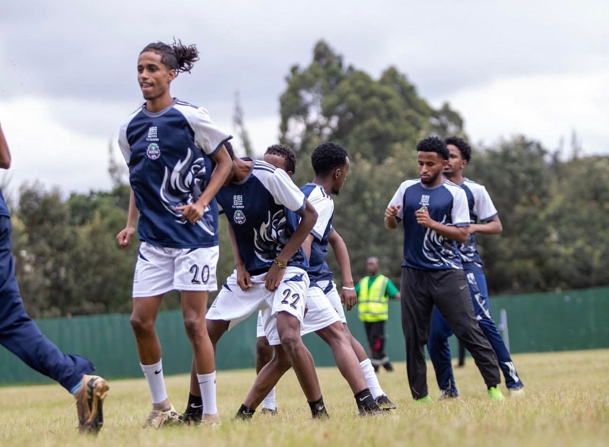
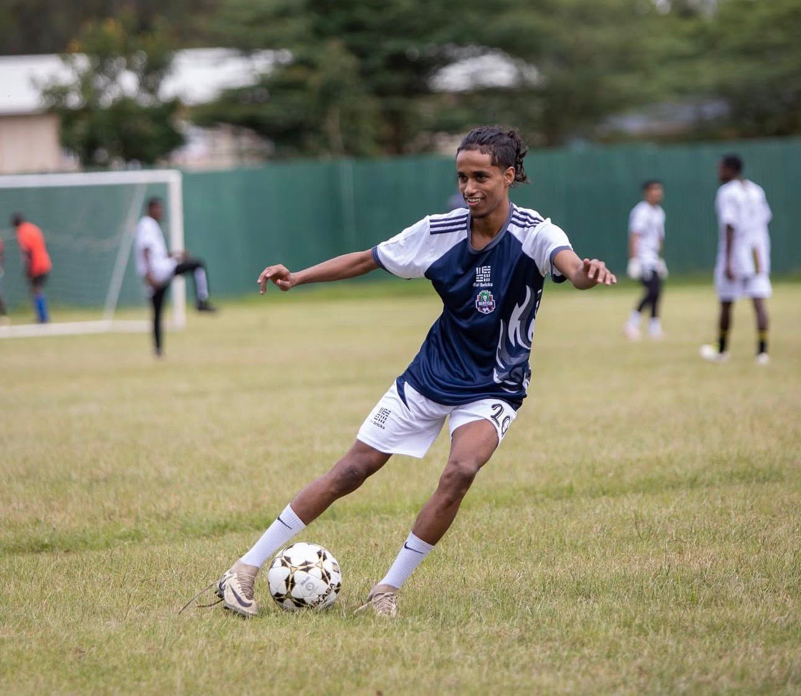
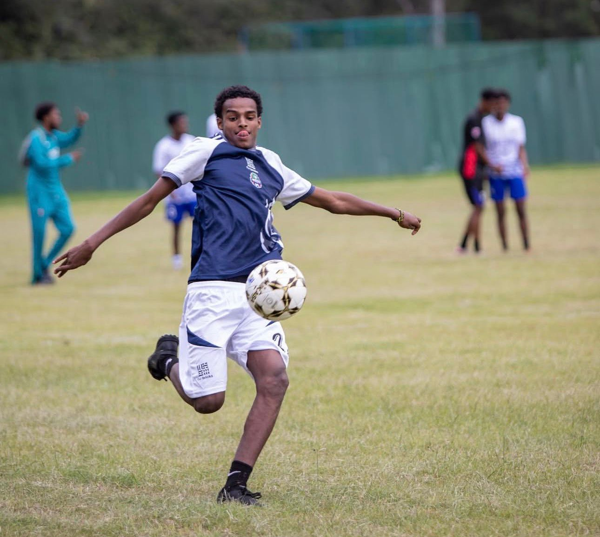

Watch and Learn Academy
The development arm of Watch and Learn FC. We train on some of the best turf in Kenya and offer a clear pathway to top clubs and professional scouting.
Academy Details
Admission open to boys and girls, ages 4–17.

Best Turf in Kenya
Our academy trains on premium, well-maintained pitches—among the best playing surfaces in Kenya. Quality facilities support technical development and reduce injury risk.

Structured Curriculum
Age-appropriate programs from grassroots to elite: ball mastery, tactical understanding, fitness, and character development. Sessions are designed for progression and visibility to scouts.

Scouting & Exposure
We create real opportunities. Our players are regularly seen by scouts from top clubs. Trials, showcases, and connections are part of the academy pathway.
Successful Players & Big Clubs
Our academy has produced players who have gone on to join top clubs. We believe in creating real possibilities for being scouted and making the next step.
First Team & Beyond
Graduates have moved into Watch and Learn FC first team and other senior sides.
National & Regional Clubs
Several players have been scouted by clubs in Kenya and the region.
Trials & Showcases
Regular trial and showcase opportunities with partner clubs and scouts.
Possibilities for being scouted: We work with scouts and clubs to give our players visibility. Performance, attitude, and readiness are what we build—so when the chance comes, you’re ready.
Club Trophies
A selection of silverware won by Watch and Learn FC.